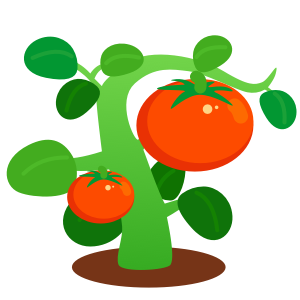

您租种的a001号地块西红柿已经结果，预计2019年9月30日可采摘第一批。

播种
开花
结果
采摘
配送
收货
评价
待采摘
2019-08-12 12:30 成功浇水


2019-08-12 12:30 成功施肥
2019-08-12 12:30 成功除草
结果
2019-08-12 12:30 成功捉虫
2019-08-12 12:30 成功除草
开花
2019-08-12 12:30 成功捉虫
2019-08-12 12:30 成功除草
播种
2019-08-12 12:30 成功捉虫
2019-08-12 12:30 成功除草